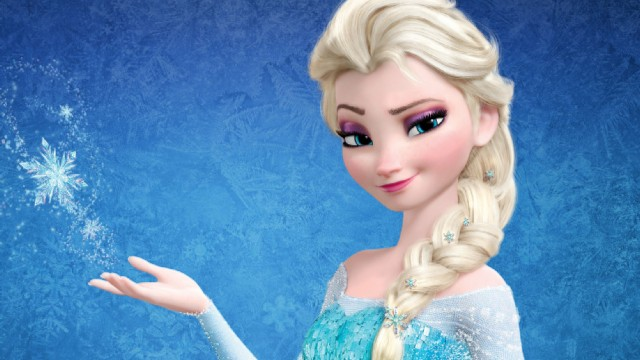

Plot
Walt Disney Animation Studios, the studio behind 'Tangled' and 'Wreck-It Ralph', presents 'Frozen', a stunning big-screen comedy adventure. Fearless optimist Anna sets off on an epic journey — teaming up with rugged mountain man Kristoff and his loyal reindeer Sven — to find her sister Elsa, whose icy powers have trapped the kingdom of Arendelle in eternal winter. Encountering Everest-like conditions, mystical trolls and a hilarious snowman named Olaf, Anna and Kristoff battle the elements in a race to save the kingdom.
Characters
Olaf
He’s Olaf and he likes warm hugs. Sprung from Elsa’s magical powers, Olaf is by far the friendliest snowman to walk the mountains above Arendelle. His innocence, outgoing personality and uncanny ability to disassemble himself at good and not-so-good times lead to some awkward, albeit laughable moments. He may also have the world’s most impossible dream, but what he doesn’t know won’t melt him—or will it?
Elsa

From the outside, Elsa looks poised, regal and reserved, but in reality, she lives in fear as she wrestles with a mighty secret—she was born with the power to create ice and snow. It’s a beautiful ability, but also extremely dangerous. Haunted by the moment her magic nearly killed her younger sister Anna, Elsa has isolated herself, spending every waking minute trying to suppress her growing powers. Her mounting emotions trigger the magic, accidentally setting off an eternal winter that she can’t stop. She fears she’s becoming a monster and that no one, not even her sister, can help her.
Anna

Anna is more daring than graceful and, at times, can act before she thinks. But she’s also the most optimistic and caring person you’ll ever meet. She longs to reconnect with her sister, Elsa, as they were close during their childhood. When Elsa accidentally unleashes a magical secret that locks the kingdom of Arendelle in an eternal winter, Anna embarks on a dangerous adventure to make things right. Armed with only her fearlessness, a never-give-up attitude and her faith in others, Anna is determined to save both her kingdom and her family.
Sven
A reindeer with the heart of a Labrador, Sven is Kristoff’s loyal friend, sleigh-puller and conscience. He makes sure his mountain-man companion is the stand-up guy Sven knows and loves, and does so without saying a word. A few emphatic snorts usually get his point across. Life would be perfect if only Kristoff would lose that ridiculous reindeer voice he likes to use when speaking for Sven (as if reindeers really talk that way).


{kind=link}
{kind=link}
{kind=link}
{kind=link}
{kind=link}
{kind=link}
{kind=link}